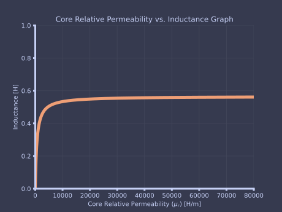
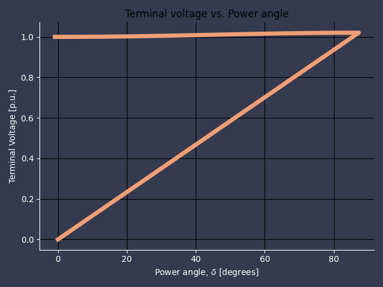

B.Sc - Electric Drives - Exercise Python Solutions
Table of Contents
1. Python Preamble
Before diving into studying all electrical machines and electromagnetic energy conversion, we need to do some python preambling.
1.1. Import Necessary Modules
As with all python programming, we need some modules to make it all work and not reinvent the wheel.
import numpy as np # For all mathematical operations import math # Additional math functions from the core from units import unit # Access unit operations and manipulations import sympy as sy # For doing symbolic calculations from sympy.plotting import plot # For plotting symbolic plotting import matplotlib # imports plotting functions for non-symbolic functions import matplotlib.pyplot as plt # Access axis and fig properties from prettytable import PrettyTable # To pretty print results
1.2. Define Common Functions
Some functions are used more than once, and to make sure debugging is kept at a minimun, they are defined below.
1.2.1. Complex-to-Polar Conversion
As we are working with AC circuits, we will work closely with phasor values, which is described below.
def complex2polar(Z): """ Produces the phasor and the angle (in radians). """ X = Z.real # get the real value of the impedance Y = Z.imag # get the imaginary value of the impedance R = math.hypot(X,Y) # get the radius of the phasor theta = math.atan2(Y,X) # get the angle of the phasor return [R, theta] # return the phasor and angle as an array
1.2.2. Magnitude of a Complex Number
Calculates the magnitude of a complex number.
def magnitude(Z): """ Calculates the magnitude of a complex value. """ return np.sqrt(Z.real**2 + Z.imag**2) # Returns magnitude
1.2.3. Polar-to-Complex Conversion
A simple function to calculate the complex number based on the polar values.
def polar2complex(angles, radii): """ Calculate the complex number based on the polar coordinate values """ return radii * np.exp(1j*angles)
2. Magnetic Circuits and Materials
2.1. Question 1
The magnetic circuit shown in Fig. 1.2 has dimensions of \(A_c = A_g = 9\) cm2, \(g = 0.050\) cm, \(l_c\) = 30 cm, and \(N\) = 500 tums. Assume the value \(\mu_r\) = 70,000 for core material.
- Find the \(\mathcal{R}_c\) and \(\mathcal{R}_g\).
- For the condition that the magnetic circuit iso perating with \(B_c\) = 1.0 T, find the flux \(\phi\) and the current $i$h.
mu0 = 4 * np.pi * 1e-7 # (H/m) permeability of free space lc = 0.3 # (m) length Ac = 9e-4 # (m2) cross-sectional area Ag = 9e-4 # (m2) cross-sectional area mur = 7e5 # (-) relative permeability g = 5e-4 # (m) air gap length N = 500 # (-) number of turns Bc = 1 # (T) Core magnetic field density Rel_c = (lc) / (mur * mu0 * Ac) # (Ampere-Turns/Weber) core reluctance Rel_g = (g) / (mu0 * Ag) # (Ampere-Turns/Weber) air-gap reluctance Phi = Bc * Ac # (Wb) Magnetic core flux MMF = Phi * (Rel_c + Rel_g) # (Ampere-Turns) Magnetomotive force i = MMF / N # (A) Current # Specify the Column Names while initializing the Table Results = PrettyTable(["Definition", "Symbol", "Value", "Unit"]) Results.align["Definition"] = "r" Results.align["Symbol"] = "l" Results.align["Value"] = "l" Results.align["Unit"] = "l" Results.add_row(["Core Reluctance", "Rel_c", round(Rel_c, 3), "Ampere-Turns/Weber"]) Results.add_row(["Air-gap Reluctance", "Rel_g", round(Rel_g, 3), "Ampere-Turns/Weber"]) Results.add_row(["***********************", "************", "****", "****"]) Results.add_row(["Core Flux", "Phi", round(Phi, 3), "Weber"]) Results.add_row(["Magneto-motive Force", "F or MMF", round(MMF, 3), "Ampere-Turns"]) Results.add_row(["Current", "i", round(i, 3), "A"]) print(Results)
+-------------------------+--------------+------------+--------------------+ | Definition | Symbol | Value | Unit | +-------------------------+--------------+------------+--------------------+ | Core Reluctance | Rel_c | 378.94 | Ampere-Turns/Weber | | Air-gap Reluctance | Rel_g | 442097.064 | Ampere-Turns/Weber | | *********************** | ************ | **** | **** | | Core Flux | Phi | 0.001 | Weber | | Magneto-motive Force | F or MMF | 398.228 | Ampere-Turns | | Current | i | 0.796 | A | +-------------------------+--------------+------------+--------------------+
2.2. Question 2
Find the flux (\(\Phi\)) and current for the previous example if;
- the number of turns is doubled to \(N\) = 1000 turns while the circuit dimensions remain the same and
- if the number of turns is equal to \(N\) = 500 and the gap is reduced to \(g\) 0.040 cm.
If the number of turns is doubled to \(N\) = 1000 turns:
mu0 = 4 * np.pi * 1e-7 # (H/m) permeability of free space lc = 0.3 # (m) length Ac = 9e-4 # (m2) cross-sectional area Ag = 9e-4 # (m2) cross-sectional area mur = 7e5 # (-) relative permeability g = 5e-4 # (m) air gap length N = 1000 # (-) number of turns Bc = 1 # (T) Core magnetic field density Rel_c = (lc) / (mur * mu0 * Ac) # (Ampere-Turns/Weber) core reluctance Rel_g = (g) / (mu0 * Ag) # (Ampere-Turns/Weber) air-gap reluctance Phi = Bc * Ac # (Wb) Magnetic core flux MMF = Phi * (Rel_c + Rel_g) # (Ampere-Turns) Magnetomotive force i = MMF / N # (A) Current Results = PrettyTable(["Definition", "Symbol", "Value", "Unit"]) Results.align["Definition"] = "r" Results.align["Symbol"] = "l" Results.align["Value"] = "l" Results.align["Unit"] = "l" Results.add_row(["Core Flux", "Phi", round(Phi * 1e3, 3) , "milli-Weber"]) Results.add_row(["Current", "i", round(i, 3) , "A"]) print(Results)
+------------+--------+-------+-------------+ | Definition | Symbol | Value | Unit | +------------+--------+-------+-------------+ | Core Flux | Phi | 0.9 | milli-Weber | | Current | i | 0.398 | A | +------------+--------+-------+-------------+
If the number of turns is equal to \(N\) = 500 and the gap is reduced to \(g\) 0.040 cm.
lc = 0.3 # (m) length Ac = 9e-4 # (m2) cross-sectional area Ag = 9e-4 # (m2) cross-sectional area mur = 7e5 # (-) relative permeability g = 4e-4 # (m) air gap length N = 500 # (-) number of turns Bc = 1 # (T) Core magnetic field density Rel_c = (lc) / (mur * mu0 * Ac) # (Ampere-Turns/Weber) core reluctance Rel_g = (g) / (mu0 * Ag) # (Ampere-Turns/Weber) air-gap reluctance Phi = Bc * Ac # (Wb) Magnetic core flux MMF = Phi * (Rel_c + Rel_g) # (Ampere-Turns) Magnetomotive force i = MMF / N # (A) Current Results = PrettyTable(["Definition", "Symbol", "Value", "Unit"]) Results.align["Definition"] = "r" Results.align["Symbol"] = "l" Results.align["Value"] = "l" Results.align["Unit"] = "l" Results.add_row(["Core Flux", "Phi", round(Phi * 1e3, 3) , "milli-Weber"]) Results.add_row(["Current", "i", round(i, 3) , "A"]) print(Results)
+------------+--------+-------+-------------+ | Definition | Symbol | Value | Unit | +------------+--------+-------+-------------+ | Core Flux | Phi | 0.9 | milli-Weber | | Current | i | 0.637 | A | +------------+--------+-------+-------------+
2.3. Question 3
The magnetic structure of a synchronous machine is shown schematically in Fig. 1.5. Assuming that rotor and stator iron have infinite permeability (\(\mu \rightarrow \infty\)), find the air-gap flux ~band flux density \(B_g\). For this example \(I\) = 10 A, \(N\) = 1000 turns, \(g\) = 1 cm, and \(A_g\) = 2000 cm2.
mu0 = 4 * np.pi * 1e-7 # (H/m) permeability of free space N = 1000 # (-) number of turns I = 10 # (A) current g = 1e-2 # (m) air-gap Ag = 0.2 # (m2) air-gap cross-sectional area Phi = (N * I * mu0 * Ag) / (2 * g) # (Weber) Air-gap flux Bg = Phi / Ag # (Tesla) Air-gap magnetic flux density Results = PrettyTable(["Definition", "Symbol", "Value", "Unit"]) Results.align["Definition"] = "r" Results.align["Symbol"] = "l" Results.align["Value"] = "l" Results.align["Unit"] = "l" Results.add_row(["Air-gap Flux", "Phi", round(Phi * 1e3, 3) , "Weber"]) Results.add_row(["Air-gap Magnetic Flux Density", "Bg", round(Bg, 3) , "Tesla"]) print(Results)
+-------------------------------+--------+---------+-------+ | Definition | Symbol | Value | Unit | +-------------------------------+--------+---------+-------+ | Air-gap Flux | Phi | 125.664 | Weber | | Air-gap Magnetic Flux Density | Bg | 0.628 | Tesla | +-------------------------------+--------+---------+-------+
2.4. Question 4
Using Python, please plot the inductance (\(L\)) of the magnetic circuit of Question 1 and Question 2 as a function of core permeability (\(\mu_r\)) over the range 100 \(\leq \mu_r \leq\) 100,000.
mu0 = 4 * np.pi * 1e-7 # (H/m) permeability of free space lc = 0.3 # (m) length Ac = 9e-4 # (m2) cross-sectional area Ag = 9e-4 # (m2) cross-sectional area g = 5e-4 # (m) air gap length N = 500 # (-) number of turns Bc = 1 # (T) Core magnetic field density Rel_g = (g) / (mu0 * Ag) # (Ampere-Turns/Weber) air-gap reluctance mur = np.zeros(1000) for i in range(len(mur)): mur[i] = 100 + (100000 - 100) * (i - 1)/1000 Rel_c = (lc) / (mur * mu0 * Ac) # (Ampere-Turns/Weber) core reluctance R_tot = Rel_c + Rel_g L= N**2 / R_tot matplotlib.use('Agg') # Use this to write to a file fig, ax = plt.subplots(1,1) ax.spines['top'].set_visible(False) ax.spines['right'].set_visible(False) fig.patch.set_facecolor('#363a4f') ax.set_facecolor('#363a4f') ax.xaxis.label.set_color('#c6d0f5') ax.yaxis.label.set_color('#c6d0f5') for axis in ['top','bottom','left','right']: ax.spines[axis].set_linewidth(3) ax.tick_params(width=3) ax.spines['bottom'].set_color('#c6d0f5') ax.spines['top'].set_color('#c6d0f5') ax.spines['left'].set_color('#c6d0f5') ax.spines['right'].set_color('#c6d0f5') ax.tick_params(axis='both', colors='#c6d0f5') plt.xlabel('Core Relative Permeability ($\mu_r$) [H/m]') plt.grid(True, "both", color='#414559') plt.ylabel('Inductance [H]') plt.xlim(0, 0.8e5) plt.ylim(0, 1) plt.title("Core Relative Permeability vs. Inductance Graph", color='#c6d0f5') plt.plot(mur, L,'#ef9f76', linewidth=5) fig.tight_layout() plt.savefig('images/python-matplot-fig.svg')

2.5. Question 5
Assume that the core material in Question 1 is M-5 electrical steel, which has the dc magnetization curve of Fig. 1.10. Find the current i required to produce \(B_e\) = 1 T.
mu0 = 4 * np.pi * 1e-7 # (H/m) permeability of free space lc = 0.3 # (m) length Ac = 9e-4 # (m2) cross-sectional area Ag = 9e-4 # (m2) cross-sectional area g = 5e-4 # (m) air gap length N = 500 # (-) number of turns Bc = 1 # (T) Core magnetic field density Hc = 11 # (Ampere-Turns/m) Ic = 0.3 Fc = Hc * Ic Fg = (Bg * g) / mu0 i = (Fc + Fg) / N
2.6. Question 6
Repeat Question 5 but find the current i for Bc – 1.6 T. By what factor does the current have to be increased to result in this factor of 1.6 increase in flux density?
2.7. Question 7
The magnetic core in Fig. 1.15 is made from laminations of M-5 grain-oriented electrical steel. The winding is excited with a 60-Hz voltage to produce a flux density in the steel of B = 1.5 sin wt T, where w = 2zr60 ~ 377 rad/sec. The steel occupies 0.94 of the core cross- sectional area. The mass-density of the steel is 7.65 g/cm3. Find:
- the applied voltage,
- the peak current,
- the rms exciting current, and
- the core loss.
2.8. Question 8
As shown in Fig. 1.17, a magnetic circuit consists of a core of high permeability (/x –+ c¢), an air gap of length g = 0.2 cm, and a section of magnetic material of length lm = 1.0 cm. The cross-sectional area of the core and gap is equal to Am – Ag = 4 cm2. Calculate the flux density Bs in the air gap if the magnetic material is (a) Alnico 5 and (b) M-5 electrical steel.
2.9. Question 9
ThemagneticcircuitofFig.1.17ismodifiedsothattheair-gapareaisreducedtoAg= 2.0cm2, as shown in Fig. 1.18. Find the minimum magnet volume required to achieve an air-gap flux density of 0.8 T.
2.10. Question 10
The magnetic circuit of Fig. 1.26 consists of rings of magnetic material in a stack of height h. The rings have inner radius Ri and outer radius Ro. Assume that the iron is of infinite permeability (/z –+ c~) and neglect the effects of magnetic leakage and fringing. For:
| SYMBOL | VALUE | UNIT |
|---|---|---|
| \(R_i\) | 3.4 | cm |
| \(R_i\) | 4.0 | cm |
| \(h\) | 2 | cm |
| \(g\) | 0.2 | cm |
Using this information, please calculate:
- the mean core length \(l_c\) and the core cross-sectional area \(A_c\).
- the reluctance of the core \(\mathcal{R}_c\) and that of the gap \(\mathcal{R}_g\).
For \(N\) = 65 turns, calculate:
- the inductance \(L\).
- current \(i\) required to operate at an air-gap flux density of \(B_g\) = 1.35T.
- the corresponding flux linkages \(\lambda\) of the coil.
# Calculation of part 1 mu0 = 4 * np.pi * 1e-7 # (H/m) permeability of free space Ri = 3.4e-2 Ro = 4.0e-2 h = 2.0e-2 g = 0.2e-2 N = 65 lc = 2 * np.pi * (Ro - Ri) - g print("Mean core length is:", lc, "m") Ac = (Ro - Ri) * h Rel_g = g/ (mu0 * Ac) Rel_c = 0 L = N**2 / (Rel_c + Rel_g) I =
3. Transformers
# Define Given Parameters X_2r = 54.3e-6 R_2r = 9.6e-6 X_m = 17.7e-3 N_1 = 5 N_2 = 800 N = N_1 / N_2 # Load Impedanceq R_b = 2.5 X_b = 0 Z_br = N**2 * (R_b + 1j * X_b) I_1 = 800 I_2 = phasor(I_1 * N * 1j * X_m / (Z_br + R_2r + 1j * (X_2r + X_m)))
p.107
# Given Parameters R1 = 128 X1 = 143 Xm = 163e3 N1 = 2400 N2 = 120 N = N1/N2 V1 = 2400 # Primary Voltage V2 = phasor(V1 * (N2/N1) * (1j * Xm / (R1 + 1j * (X1 + Xm)))) V2
| 119.89477930190378 | 0.044953557754981735 |
p.119 2.1
# At 60 Hz, w = 120 pi N1 = 1200 # turns N2 = 75 # turns f = 50 w = 2 * np.pi * f Ac = 42e-4 # m2 B = 1.45 # Tesla primary = N1 * w * Ac * B secondary = N2 * w * Ac * B secondary
143.49224445271378
p.120
A magnetic circuit with a cross-sectional area of \(15 cm^2\) is to be operated at 60 Hz from a 120-V rms supply. Calculate the number of turns required to achieve a peak magnetic flux density of 1.8 T in the core.
Ac = 15e-4 V = 120 T = 1.8 f = 60 w = 2 * np.pi * f N = np.sqrt(2) * V / (w * Ac * B) N
206.96926808209338
A transformer is to be used to transform the impedance of a 8-fl resistor to an impedance of 75 ft. Calculate the required turns ratio, assuming the transformer to be ideal.
Z1 = 8 Z2 = 75 N = np.floor(np.sqrt(Z2 / Z1))
A 100-fl resistor is connected to the secondary of an idea transformer with a turns ratio of 1:4 (primary to secondary). A 10-V rms, 1-kHz voltage source is connected to the primary. Calculate the primary current and the voltage across the 100-f2 resistor.
R2 = 100 ratio = 0.25 V1 = 10 f = 1e3 R1 = ratio**2 * R2 I1 = V1 / R1 V2 = (1/ratio) * V1
A 120-V:2400-V, 60-Hz, 50-kVA transformer has a magnetizing reactance (as measured from the 120-V terminals) of 34.6 ft. The 120-V winding has a leakage reactance of 27.4 mr2 and the 2400-V winding has a leakage reactance of 11.2 ft. a. With the secondary open-circuited and 120 V applied to the primary (120-V) winding, calculate the primary current and the secondary voltage. b. With the secondary short-circuited, calculate the primary voltage which will result in rated current in the primary winding. Calculate the corresponding current in the secondary winding.
V1 = 120 f = 60 Xm = 34.6 X1 = 27.4e-3 I1 = V1 / (X1 + Xm)
A 7970-V: 120-V, 60-Hz potential transformer has the following parameters as seen from the high-voltage (primary) winding: X1=1721~2X~=1897~ Xm=782kf2 R1–1378f2 R~=1602S2 a. Assuming that the secondary is open-circuited and that the primary is connected to a 7.97-kV source, calculate the magnitude and phase angle (with respect to the high-voltage source) of the voltage at the secondary terminals. b. Calculate the magnitude and phase angle of the secondary voltage if a 1-kfl resistive load is connected to the secondary terminals. c. Repeat part (b) if the burden is changed to a 1-kf2 reactance.
4. Electromechanical Energy Converion Principles
4.1. Magnetic Rotor Circuit - I
The magnetic circuit of Fig. 3.9 consists of a single-coil stator and an oval rotor. Because the air-gap is nonuniform, the coil inductance varies with rotor angular position, measured between the magnetic axis of the stator coil and the major axis of the rotor, as
\begin{equation*} L(\theta) = L_0 + L_2 \cos(2\theta) \end{equation*}where \(L_0 = 10.6 mH\) and \(L_2 = 2.7 mH\).
NOTE: the second-harmonic variation of inductance with rotor angle 0. This is consistent with the fact that the inductance is unchanged if the rotor is rotated through an angle of 180°.
Find the torque as a function of \(\theta\) for a coil current of \(i=2 A\).
# Define symbols for symbolic calculation i, theta, L0, L2 = sy.symbols('i theta L0 L2') # Write the inductive value with regards to theta L = L0 + L2 * sy.cos(2*theta) # Calculate the torque equation using the current and # induction equations T = i ** 2 / 2 * sy.diff(L, theta) # Substitute symbolic variables with numeric ones T.subs([(L2, 2.7e-3), (i, 2)]) print(T) # Print the output del i, theta, L0, L2 # Remove the used variables from memory
-L2*i**2*sin(2*theta)
4.2. Magnetic Rotor Circuit - II
The inductance of a coil on a magnetic circuit similar to that of Fig. 3.9 is found to vary with rotor position as L(O) = Lo + L2 cos (20) + L4 sin (40) whereL0= 25.4mH,L2= 8.3mHandL4= 1.8mH.(a)Findthetorqueasafunctionof0 for a winding current of 3.5 A. (b) Find a rotor position 0maxthat produces the largest negative torque.
i, theta, L0, L2, L4 = sy.symbols('i theta L0 L2 L4') # Define symbols for symbolic calculation L = L0 + L2 * sy.cos(2*theta) + L4 * sy.sin(4*theta) T = i ** 2 / 2 * sy.diff(L, theta) T.subs([(L2, 8.3e-3), (i, 3.5), (L4, 1.8e-3)]) del i, theta, L0, L2, L4 # Remove the used variables from memory
4.3. Magnetic Plunger
Consider a plunger whose inductance varies as:
\begin{equation*} L(x) = L_0 (1 - (x/d)^2) \end{equation*}Find the force on the plunger as a function of \(x\) when the coil is driven by a controller which produces a current as a function of \(x\) of the form
\begin{equation*} i(x) = I_0 \left( \frac{x}{d} \right)^2 A \end{equation*}4.4. Determination fo Magnetic Force and Torque from Co-Energy
i, I0, x, d, mu0, N, l, g = sy.symbols('i I0 x d mu0 N l g') # Define symbols for symbolic calculation i = I0 * (x / d) L = mu0 * N ** 2 * l * d * (1 - x /d ) / (2 * g) f = i ** 2 / 2 * sy.diff(L, x) W_fld = i ** 2 / 2 * L W_fld
I0**2*N**2*l*mu0*x**2*(1 - x/d)/(4*d*g)
In the system shown in Fig. 3.15, the inductances in henrys are given as Lll = (3 + cos 20) x 10-3. L12=0.3cos0" L22= 30 + 10cos20. Find and plot the torque Tnd(0) for current il = 0.8 A and i2 = 0.01 A.
theta = sy.symbols('theta') L = np.array([[(3 + sy.cos(2 * theta))*1e-3, 0.3 * sy.cos(theta)],[0, (30 + 10 * sy.cos(2 * theta))]]) i = [0.8, 0.01] T_fld = i[0]**2 / 2 * sy.diff(L[0,0], theta) + i[1]**2 / 2 * sy.diff(L[1,1], theta) + i[0] * i[1] * sy.diff(L[0,1], theta) #plot(T_fld)
4.5. Coenergy of a Magnetic Circuit
(a) Derive an expression for the coenergy in the magnetic circuit of Fig. 3.20 as a function of the plunger position x. (b) Derive an expression for the x-directed force on the plunger and evaluate it at x = Wg/2. Neglect any effects of fringing fluxes. The dimensions are:
Wm = 0.02 # m Wg = 0.025 # m D = 0.03 # m d = 0.01 # m g = 0.002 # m mur = 1.05 * mu0 Br = 0.94 W_fldr = (Wm * D * Br)**2 / (2 * mur * (d + (mur/mu0) * ((2 * g * Wm)/(Wg - x)))) print(W_fldr)
1.51474285714286e-7/(mu0*(0.01 + 8.4e-5/(0.025 - x)))
5. Introduction to Rotating Machines
5.1. Question 1
A two-pole, three-phase, $Y$-connected \(60 Hz\) round-rotor synchronous generator has a field winding with \(N_f\) distributed turns and winding factor \(k_f\).
The armature winding has \(N_a\) turns per phase and winding factor \(k_a\). The air-gap length is \(g\), and the mean air-gap radius is \(r\). The armature-winding active length is \(l\). The dimensions and winding data are:
| \(N_f\) = 68 series turns |
| \(N_a\) = 18 series turns/phase |
| \(r\) = 0.53 m |
| \(l\) = 3.8 m |
| \(k_f\) = 0.945 |
| \(k_a\) = 0.933 |
| \(g\) = 4.5 cm |
The rotor is driven by a steam turbine at a speed of 3600 r/min. For a field current of \(I_f\) = 720 A DC. Using these informations compute:
- the peak fundamental mmf (\(F_{{ag1}_{peak}}\)) produced by the field winding,
- the peak fundamental flux density (\(B_{{ag1}_{peak}}\)) in the air gap,
- the fundamental flux per pole (\(\Phi_p\)), and
- the rms value of the open-circuit voltage generated in the armature.
Nf = 68 Na = 18 r = 0.53 l = 3.8 kf = 0.945 ka = 0.933 g = 0.045 poles = 2 If =720 f = 60 Fag1peak = 4 / np.pi * ((kf * Nf)/ (poles)) * If Bag1peak = mu0 * Fag1peak / g Phip = 2 * Bag1peak * l * r Erms = np.sqrt(2) * np.pi * f * ka * Na * Phip print(Erms)
11803221534.8993*mu0
From Eq.
\begin{equation*} F_{{ag1}_{peak}} = \dfrac{4}{\pi} \left( \dfrac{k_f N_f}{poles} \right) I_f = \dfrac{4}{\pi} \left( \dfrac{0.945 \times 68}{2} \right) 720 \end{equation*}5.2. Question 2
An 1800-r/min, four-pole, 60-Hz synchronous motor has an air-gap length of 1.2 mm. The average diameter of the air-gap is 27 cm, and its axial length is 32 cm. The rotor winding has 786 turns and a winding factor of 0.976.
Assuming that thermal considerations limit the rotor current to 18 A, estimate the maximum torque and power output one can expect to obtain from this machine.
kr = 0.976 Nr = 786 poles = 4 Ir_max = 18 D = 0.27 l = 0.32 Bsr = 1.5 Fr_max = 4 / np.pi * ((kr * Nr)/(poles)) * Ir_max Tmax = (poles / 2) * (np.pi * D * l) / 2 * Bsr * Fr_max print(Fr_max)
4395.365511254792
5.3. Question 3
Repeat Example 4.8 for a two-pole, 60-Hz synchronous motor with an air-gap length of 1.3 mm, an average air-gap diameter of 22 cm and an axial length of 41 cm.
The rotor winding has a 900 turns and a winding factor of 0.965. The maximum rotor current is 22 A.
6. Synchronous Drives
6.1. Question 1
A 60-Hz, three-phase synchronous motor is observed to have a terminal voltage of \(V_a\) = 460 V (line-line) and a terminal current of \(I_a\) = 120 A at a power factor of \(pf\) = 0.95 lagging.
The field-current under this operating condition is \(I_f\) = 47 A. The machine synchronous reactance is equal to \(X_m\) = 1.68 Ohm (0.794 per unit on a 460-V, 100-kVA, 3-phase base).
Assume the armature resistance (\(R_a\) ~ 0) to be negligible. Calculate:
- the generated voltage \(E_{af}\) in V,
- the magnitude of the field-to-armature mutual inductance \(L_{af}\), and
- the electrical power input (\(P_{in}\)) to the motor in kW and in horsepower.
# Choosing the terminal voltage (Va) as the reference point. Va = 460 # (V) line-to-line voltage pf = - 0.95 # (-) power factor (lagging) Ia = 120 # (A) Armature voltage If = 47 # (A) Field current Xs = 1.68 # (Ohm) Armature reactance angle = - np.arccos(pf) # (-) Power factor Va_phase = Va / np.sqrt(3) # (V) Per-phase armature voltage f = 60 # (Hz) Input grid frequency w = 2 * np.pi * f # (rad/s) angular speed Eaf = Va_phase - 1j * Xs * (polar2complex(Ia, angle)) # (V) Generated voltage Laf = (np.sqrt(2) * np.abs(Eaf)) / (w * If) # (H) Filed-to-Armature mutual inductance Pin = 3 * Va_phase * Ia * np.abs(pf) # (W) input power Pin_hp = Pin * 1 / 746 # (hp) input power
6.2. Question 2
Assuming the input power and terminal voltage for the motor of the previous example remain constant, calculate
- the phase angle \((\delta)\) of the generated voltage, and
- the field current required to achieve unity power factor \((\delta=1)\) at the motor terminals.
# Choosing the terminal voltage (Va) as the reference point. Va = 460 # (V) line-to-line voltage pf = - 0.95 # (-) power factor (lagging) Ia = 120 # (A) Armature voltage If = 47 # (A) Field current Xs = 1.68 # (Ohm) Armature reactance angle = - np.arccos(pf) # (-) Power factor Va_phase = Va / np.sqrt(3) # (V) Per-phase armature voltage f = 60 # (Hz) Input grid frequency w = 2 * np.pi * f # (rad/s) angular speed Eaf = Va_phase - 1j * Xs * (polar2complex(Ia, angle)) # (V) Generated voltage Laf = (np.sqrt(2) * np.abs(Eaf)) / (w * If) # (H) Filed-to-Armature mutual inductance Pin = 3 * Va_phase * Ia * np.abs(pf) # (W) input power Pin_hp = Pin * 1 / 746 # (hp) input power # For unity power factor at the motor terminals, the phase-a terminal current # will be in phase with the phase-a line-to-neutral voltage Va. Therefore: Ia = Pin / (3 * Va_phase) Eaf = Va_phase - 1j * Xs * Ia print(complex2polar(Eaf)) # Having found Laf in Example 5.1, we can find the required field current If = (np.sqrt(2) * Eaf) / (w * Laf)
6.3. Question 3
The synchronous machine of Question 1 and Question 2 is to be operated as a synchronous generator. For operation at 60 Hz with a terminal voltage of 460 V line-to-line, calculate the field current required to supply a load of 85 kW, 0.95 power-factor leading.
6.4. Question 4
An open-circuit test performed on a three-phase, 60 Hz synchronous generator shows that the rated open-circuit voltage of 13.8 kV is produced by a field current of 318 A. Extrapolation of the air-gap line from a complete set of measurements on the machine shows that the field-current corresponding to 13.8 kV on the air-gap line is 263 A. Calculate the saturated and unsaturated values of \(L_{af}\).
# Laf is found from Laf = () / ()
6.5. Question 5
If the synchronous generator of Question 4 is operated at a speed corresponding to a generated voltage of 50 Hz, calculate
- the open-circuit line-to-line terminal voltage corresponding to a field current of 318 A and
- the field-current corresponding to that same voltage on the 50-Hz air-gap line.
6.6. Question 6
A three-phase, 75-MVA, 13.8-kV synchronous generator with saturated synchronous reactance \(X_s\) = 1.35 per unit and unsaturated synchronous reactance \(X_s,u\) = 1.56 per unit is connected to an external system with equivalent reactance $XEQ = 0.23 per unit and voltage $VEQ = 1.0 per unit, both on the generator base.
It achieves rated open-circuit voltage at a field current of 297 amperes.
- Find the maximum power Pmax(in MW and per unit) that can be supplied to the external system if the internal voltage of the generator is held equal to 1.0 per unit.
- Using Python, plot the terminal voltage of the generator as the generator output is varied from zero to Pmaxunder the conditions of part 1.
- Now assume that the generator is equipped with an automatic voltage regulator which controls the field current to maintain constant terminal voltage. If the generator is loaded to its rated value, calculate the corresponding power angle, per-unit internal voltage, and field current. Using Python, plot per-unit Ear as a function of per-unit power.
# Using the standard power equation for the synchronous drive: Pbase = 75 Eaf = 1 # (p.u.) Generated voltage Va = 1 # (p.u.) Armature equivalent voltage Xs = 1.35 Xs_u = 1.56 XEQ = 0.23 # As the drive is operating with a terminal voltage near its rated value, # we should express Pmax in terms of the saturated synchronous reactance. # Therefore: Pmax = (Eaf * Va) / (Xs + XEQ) # The generator terminal current is given by VEQ = 1 Eaf = 1 XEQ = 0.23 Xs = 1.35 delta = np.zeros(100) Ia = np.zeros(100) Va = np.zeros(100) degree = np.zeros(100) for i in range(len(delta) - 1): delta[i] = (np.pi / 2) * (i - 1) / 100 Ia[i] = (Eaf * np.exp(1j*delta[i]) - VEQ) / (1j * (Xs - XEQ)) Va[i] = np.abs(VEQ + 1j * XEQ * Ia[i]) degree[i] = 180 * delta[i] / np.pi matplotlib.use('Agg') # Use this to write to a file print(Va) fig, ax = plt.subplots(1,1) ax.spines['top'].set_visible(False) ax.spines['right'].set_visible(False) fig.patch.set_facecolor('#363a4f') ax.set_facecolor('#363a4f') ax.xaxis.label.set_color('w') ax.yaxis.label.set_color('w') ax.spines['bottom'].set_color('w') ax.spines['top'].set_color('w') ax.spines['left'].set_color('w') ax.spines['right'].set_color('w') ax.tick_params(axis='both', colors='w') plt.xlabel('Power angle, $\delta$ [degrees]') plt.title('Terminal voltage vs. Power angle') plt.grid(True) plt.ylabel('Terminal Voltage [p.u.]') #plt.xlim(0, 0.8e5) plt.plot(degree, Va, '#ef9f76', linewidth=5) fig.tight_layout() plt.savefig('images/saturated-synchronous-reluctance.png')
